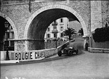
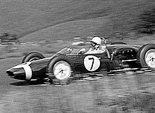
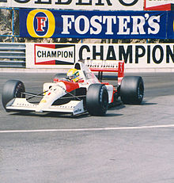
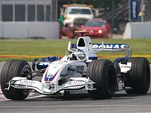
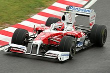
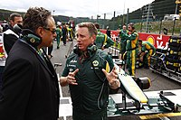

CREACION DEL CAMPEONATO
El Campeonato Mundial de Fórmula 1 se creó en 1950 después de que la antigua AIACR se reorganizara como la FIA con sede en París. Se unieron varios Grandes Premios nacionales y se estableció un sistema de puntuación, reconociéndose 7 carreras como aptas para el campeonato. Durante los años 1952 y 1953 se compitió con coches de Fórmula 2 debido a motivos económicos y varias carreras no fueron consideradas Grandes Premios hasta 1983.
PRIMERAS CARRERAS (1950-1958)
El primer Gran Premio de la Fórmula 1 se llevó a cabo en Silverstone en 1950 y fue ganado por el piloto italiano Giuseppe Farina. A pesar de que Farina ganó el campeonato de 1950, el piloto argentino Juan Manuel Fangio ganó el título en cinco ocasiones consecutivas, excepto por el bicampeonato del piloto de Ferrari Alberto Ascari. Durante esta época, hubo varios pilotos importantes, como Stirling Moss, un piloto británico que nunca ganó un título mundial. Las primeras temporadas estaban dominadas por escuderías de fabricantes de automóviles como Alfa Romeo, Ferrari, Maserati y Mercedes Benz. Durante la primera parte de la década de 1950, los campeonatos mundiales se llevaron a cabo con coches más pequeños y menos potentes debido a la falta de disponibilidad de los coches de Fórmula 1. Mercedes presentó el avanzado W196 en 1954 con características innovadoras y ganó el campeonato de conductores dos años consecutivos antes de retirarse de todas las competiciones después del desastre en Le Mans en 1955.

LOS GARAJISTAS (1959-1980)
En el primer gran desarrollo tecnológico de la Fórmula 1, la Cooper Car Company reintrodujo coches con motor central, que pronto demostraron su superioridad y fueron adoptados por todos los competidores regulares en 1961. El británico Colin Chapman, fundador del Lotus Team, revolucionó el deporte con su diseño de chasis monocasco de aluminio en 1962. A finales de los años 60, la aerodinámica adquirió importancia y Lotus presentó una carrocería con efecto suelo que generaba grandes fuerzas aerodinámicas. Esto requirió aumentar la rigidez de la suspensión, lo que hacía depender en gran medida de los neumáticos para amortiguar al chasis y al piloto. Doce campeones mundiales británicos fueron coronados entre 1962 y 1973. La introducción del patrocinio de marcas de tabaco en 1968 también fue un hito en la Fórmula 1.
LA GRAN EMPRESA (1981-)
Bernie Ecclestone reorganizó la gestión de los derechos comerciales de la Fórmula 1 a partir de la década de 1970. Compró el equipo Brabham en 1971, ganó un puesto en la Asociación de Constructores de Fórmula 1 (FOCA) en 1978 y se convirtió en su presidente. Ecclestone negoció con los equipos para hacerlo en conjunto a través de FOCA, ofreciendo la Fórmula 1 a los propietarios del circuito como un paquete. La formación de la Fédération Internationale du Sport Automobile (FISA) desató una polémica, pero el Acuerdo de la Concordia de 1981 garantizó la estabilidad técnica. La FOCA cedió la gestión de los derechos de televisión a la Formula One Promotions and Administration (FOPA) en 1987, bajo la dirección de Ecclestone. Durante la década de 1980 comenzó el desarrollo de ayudas electrónicas a los pilotos, pero la FIA prohibió muchas de estas ayudas para el año 1994. Los equipos firmaron tres acuerdos de la concordia, el último de los cuales expiró en 2007. McLaren y Williams dominaron los años 1980 y 1990 y hubo una rivalidad entre los pilotos Ayrton Senna y Alain Prost en 1988. La FIA ha trabajado para mejorar la seguridad en el deporte desde la muerte de varios pilotos.
EL REGRESO DE LOS FABRICANTES
Michael Schumacher y Ferrari ganaron cinco campeonatos de pilotos consecutivos entre 2000 y 2004 y seis de constructores entre 1999 y 2004, algo sin precedentes en la Fórmula 1. Schumacher estableció varios récords, incluyendo victorias de Gran Premio, victorias en una temporada y más títulos de conductores. La racha de Schumacher terminó cuando Fernando Alonso se convirtió en el campeón más joven en 2005. Schumacher se retiró en 2006 pero volvió en 2010 para correr en el equipo Mercedes. Durante este tiempo, la FIA cambió varias reglas con la intención de mejorar la acción en la pista y reducir costos. Las órdenes de equipo fueron prohibidas después de varios incidentes que generaron publicidad negativa, pero volvieron a ser legales en 2011. Otros cambios incluyen el formato de clasificación, el sistema de puntuación y los reglamentos técnicos. Hubo un conflicto entre los proveedores de neumáticos Michelin y Bridgestone que se reflejó en el Gran Premio de los Estados Unidos en 2005. Max Mosley esbozó un futuro "verde" para la Fórmula 1 en 2006, con un enfoque en la eficiencia energética. Desde 1983, la Fórmula 1 ha sido dominada por equipos especializados en carreras, con la entrada de equipos de fabricantes a partir de 2000. Para 2006, los equipos de fabricantes como Renault, BMW, Toyota, Honda y Ferrari dominaron el torneo, siendo McLaren la única excepción.
EL DECLIVE
En los años 2000, debido a la crisis económica, varias escuderías de la Fórmula 1 se retiraron, incluyendo Honda, Super Aguri, BMW y Toyota. Mercedes-Benz formó su propio equipo en 2010 y retiró su apoyo económico a McLaren. El empresario Tony Fernandes intentó que Team Lotus regresara a la Fórmula 1 en 2010 y registró una escudería bajo el nombre de Lotus Racing. Esto generó controversia con Lotus Cars y en 2011, el equipo pudo seguir usando el nombre Lotus en la F1. Sin embargo, en 2012, la plaza fue reemplazada por Caterham F1 Team para evitar problemas legales con Lotus Cars. Desde 2012 hasta 2015, Lotus F1 Team compitió en la Fórmula 1 con patrocinio de Lotus Cars. En 2014, el equipo Marussia cerró sus puertas y Caterham fue embargada en 2015. La Comisión Europea investigó cómo se distribuyen los 714 millones de euros en ingresos comerciales de la Fórmula 1. Ecclestone negó que la Fórmula 1 esté sufriendo una crisis económica y afirmó que el problema es debido a la mala administración de los "equipos pequeños".
 ERA HIBRIDA
En 2014, la Fórmula 1 implementó un cambio importante en su reglamento, reemplazando los motores V8 con V6 turboalimentados de 1.6 litros y agregando un sistema híbrido de recuperación de energía. Los cuatro fabricantes actuales son Mercedes, Ferrari, Renault y Honda, que se sumó en 2015 como proveedor de motores para McLaren. Con la mejora en la aerodinámica en 2017, los monoplazas son ahora más rápidos que nunca. La compañía estadounidense Liberty Media controla el Formula One Group desde 2016 y Bernie Ecclestone fue director ejecutivo hasta enero de 2017, después de 39 años al mando.